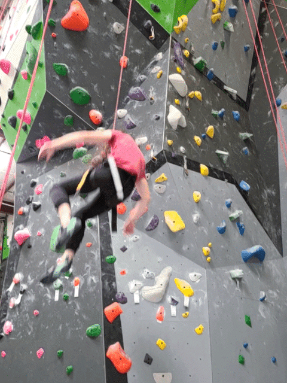
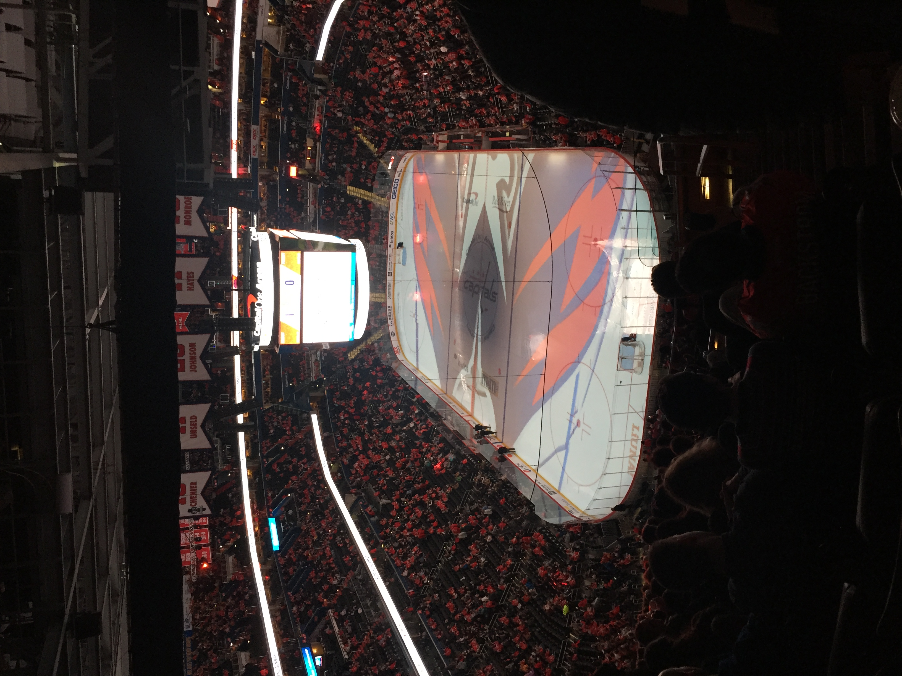

I am a graduate research assistant and PhD candidate in the astronomy department at UVA, working with Professor Zhi-Yun Li and Professor Ilse Cleeves. In my research I study magnetic fields in star forming environments. I am in the final year of my PhD and plan to defend my thesis in Spring 2024. That will make me a Triple 'Hoo! (BS '17, MS '18)
I enjoy spending time outdoors, running, playing rec league sports, and rock climbing. When I'm not outside I'm often in my home "studio" trying to make music, and/or watching some random sport on TV. Off the top of my head, some of the stuff I most look forward to watching each year are March Madness, The Tournament of Hearts & The Brier, The Tour de France, and the Indy 500!
Over the last few years, two of my main personal projects have been climbing and learning how to make music. Below I share a few details about how it's going.
I started climbing on October 11th, 2021 when a friend took me bouldering at the UVA Rec Center. I immediately felt like it was an amazing sport; I really enjoy the combination of strength and movement it requires. Climbing also turns out to be something where progress is very tangible, which I find gratifying.
Since the day I started climbing I've kept a journal of my sessions. In addition to qualitative stuff like how I felt on a given day, I also record the grade of each of the climbs I've completed. In the image above I chart some of the data, and my progress over time is pretty evident! Of course, grading climbs is super subjective and varies significantly from place to place, so it's hard to tell exactly what these results mean in any objective sense.
In any case, I feel like I currently project around V5-V7 (V6-V8 in your gym) depending on the climb. I want to get a lot stronger though and hope to gradually start climbing harder and harder in the coming years! I should note also that to date I've mostly been an indoor boulderer, mainly doing my sessions at Rocky Top in C'ville and at the UVA wall. In fact, as of my 2-year climbing anniversary I have only climbed outside one time, at The Forest.
Some of my short-term goals are to boulder more outside (maybe I'll even get a crashpad...), start Moonboarding, and start getting into other climbing disciplines. I've top roped a couple of times at Triangle Rock Club in Richmond, but I'd say I'm still pretty much a novice when it comes to walls that go higher than 12 ft (lol).
I've had a general interest in making music since about 2011. Prior to that I actually played alto saxophone in middle school and high school, but music didn't really click for me as something I liked until I started playing guitar and listening to heavy metal as a teenager (🙄).
After playing guitar as a (fairly invested) hobby for about 10 years, in 2021 I became interested in actually making stuff. In pursuit of this goal, I've spent a lot of time over the last few years trying to learn how to produce, write competantly, and sing. My long-term goal is to build the skills required to write, perform, produce, and mix professional quality songs from a bedroom/indie studio setup.
So far the process has been pretty fun, but also I still kinda suck at everything. Maybe someday I'll share some of what I've been working on. In the meantime, here's some of the gear and resources I've been using.

Reading
The Recording Engineer's Handbook (Owsinski)
The Sound Reinforcement Handbook (Davis & James)
The Mixing Engineer's Handbook (Owsinski)
Basics of Mixing (Roland)
The Art of Mixing (David Gibson)
Online Resources
Ear Training
Note Frequencies (A0 - B8)
Music Instrument Frequency Cheatsheet
muted.io
Computer
MacBook Pro 2017, Intel i5, 16 GB RAM
DAW
Logic Pro
Software
Synth1
TAL-U-NO-LX
U-He Diva & Repro
Neural DSP Archetype guitar plugins
Hardware
Arturia MiniLab MkII
M-Audio Oxygen Pro 61
Audio Interface
Behringer U-PHORIA UMC404
Microphones
Shure SM58
AKG P420
Monitoring
JBL 305P
Audio-Technica ATH-M50x
Guitars
Ibanez PF15
Fender Telecaster MIM '92
Gibson LPJ 2013
Squier 40th Anniversary Precision Bass
Board
Korg Pitchblack
Pro Co RAT
DigiTech Obscura Altered Delay
Picks
Herco Flex 75
Jazz III
449P150
Fender Medium